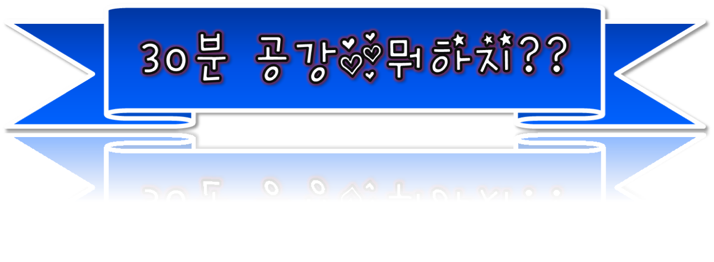
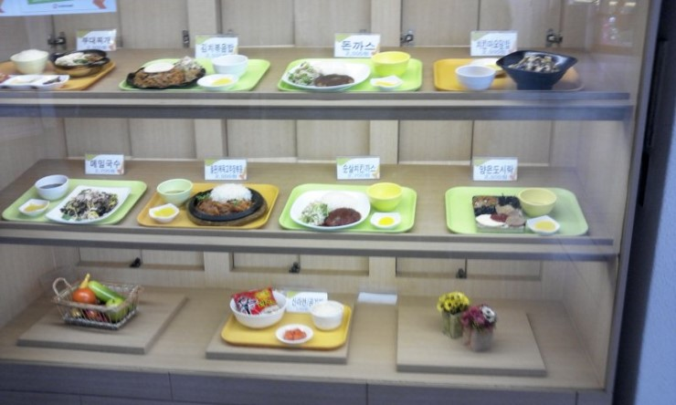
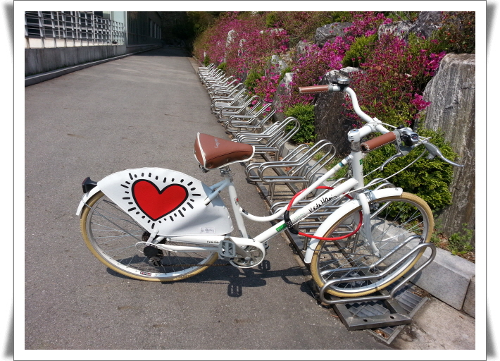

★. 스마트폰게임하기
- 스마트폰 게임 순위 랭킹!! -
1. 쿠키런
2. 윈드러너
3. 런닝독
4. 김준현의 공기놀이

★. 전산실에서 컴퓨터 하기 (: 새천년관)
새천년관 2층에서 무료로 컴퓨터를 이용할 수 있다.

★. 이삭 토스트(: 건대 후문에 위치)
- 추천 메뉴 -
1. 베이컨 토스트 2000원
2. 감자 치즈 토스트 2500원
★. 독서하기
- 추천 베스트 셀러 -
1. 아프니까 청춘이다(김난도)
2. 서울시(하상욱)
* 도서관에서 책을 빌려서 보는 것도 좋다.

★. 낮잠자기
동아리를 들어 동방에서 자는 것도 좋다.
약간의 낮잠은 집중력 향상에 좋다.

★. 점심먹기(간단히)
-학관에서 밥 먹기
: 시간과 돈이 별로 없는데 밥은 먹고 싶을 때 추천!

★. 일감호 한 바퀴 돌기
남자친구를 만들어서 같이 돌면 더 재미있다.

★. 자전거 타기
- 추천 베스트 셀러 -
캠퍼스 내에 자전거를 빌릴 수 있는 곳이 있다.